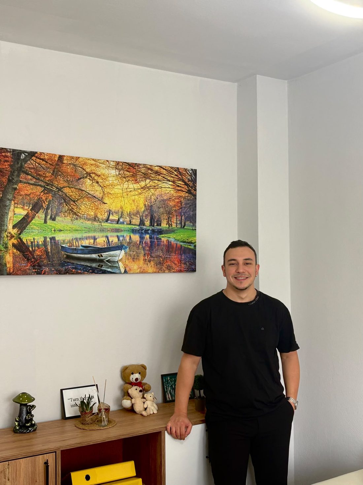

Psikolog Kıvanç Kandemir
ALKI Ruhsal Gelişim'e Hoş Geldiniz
Seansları danışanın yaşına ve ihtiyacına göre planlıyorum. Çocuklarla oyun ve çizim temelli teknikler kullanıyor, ergen ve yetişkinlerle görüşmeler ve seans arası çalışmalarla ilerliyorum.
Uygulanacak yöntemi, ilk görüşmelerin ardından danışanın ihtiyacına göre birlikte belirliyoruz.

Psk. Kıvanç Kandemir
Hakkımda
ALKI Ruhsal Gelişim'in kurucusuyum. Adana Seyhan'daki ofisimde çocuk, ergen ve yetişkin danışanlarla yüz yüze görüşüyor, şehir dışındaki danışanlarımla online seanslar yapıyorum.
Çalışmalarımda bilişsel davranışçı terapi (BDT), EMDR ve şema terapi yaklaşımlarından yararlanıyorum. Dikkat güçlüğü yaşayan çocukların değerlendirme sürecinde MOXO dikkat testini uyguluyorum.
Devamını GörDanışan Grupları
Çalışma Alanları

Çocuk Terapisi
Kaygı, öfke nöbetleri, uyku sorunları, okula uyum ve dikkat güçlüklerinde destek sağlıyorum. Süreç boyunca ebeveynlerle de düzenli olarak görüşüyorum.
Daha Fazla
Ergen Terapisi
Sınav stresi, arkadaş ilişkileri, aile içi çatışmalar ve yoğun duygularla baş etme konularında destek sağlıyorum.
Daha Fazla
Yetişkin Terapisi
Kaygı, panik, tükenmişlik, öfke ve ilişki sorunlarında, ayrıca ayrılık ya da kayıp gibi zorlu dönemlerde bireysel görüşmeler yapıyorum.
Daha Fazla
Online Görüşme
Adana dışında yaşıyorsanız ya da ofise gelmeniz mümkün değilse görüntülü görüşme ile seans yapabiliriz.
Daha FazlaYöntemler
Terapi Yöntemleri ve Değerlendirme
Uygulanacak yöntemi, ilk görüşmelerin ardından danışanın ihtiyacına göre birlikte belirliyoruz.
 Terapi Yöntemi
Terapi YöntemiBilişsel Davranışçı Terapi
BDT, düşünce, duygu ve davranış arasındaki ilişkiyi inceleyen, hedef odaklı bir terapi yöntemidir.
Daha Fazla Terapi Yöntemi
Terapi YöntemiEMDR
EMDR, zorlayıcı ve sarsıcı anıların günümüzdeki etkisini azaltmayı amaçlayan bir terapi yöntemidir.
Daha Fazla Terapi Yöntemi
Terapi YöntemiŞema Terapi
Şema terapi, çocukluktan gelen ve tekrar eden örüntülerin fark edilmesine ve değiştirilmesine odaklanır.
Daha Fazla Değerlendirme
DeğerlendirmeMOXO Dikkat Testi
MOXO, DEHB değerlendirmesinde kullanılan bilgisayar tabanlı bir dikkat testidir.
Daha FazlaRandevu Alın
Randevu Talebi
Randevu talebinizi WhatsApp üzerinden iletebilirsiniz. Mesajlarınıza genellikle aynı gün içinde dönüş yapıyorum.
İletişim
İletişim Bilgileri
Randevu talepleriniz ve sorularınız için aşağıdaki iletişim kanallarını kullanabilirsiniz. En hızlı dönüşü WhatsApp üzerinden yapıyorum.
- Telefon0555 198 01 08
- WhatsApp0555 198 01 08
- E-postapsk.kivanckandemir@gmail.com
- AdresZiyapaşa Mah. 67029 Sk. Yeniceli Apt. Kat:1 No:2, Seyhan/Adana
- Instagram@psk.kivanckandemir
Merak Edilenler
Sık Sorulan Sorular
Randevu süreci ve görüşmeler hakkında sıkça sorulan soruları aşağıda bulabilirsiniz.
Randevu almak için ne yapmam gerekiyor?
WhatsApp, telefon ya da e-posta ile iletişime geçebilirsiniz. Görüşmek istediğiniz konuyu ve uygun olduğunuz gün ve saatleri kısaca belirtmeniz halinde ilk görüşmeyi planlıyoruz.
İlk görüşmede neler oluyor?
İlk görüşme, tanışma ve değerlendirme amacı taşır. Başvuru nedeninizi, bu durumun ne zamandır sürdüğünü ve günlük yaşamınızı nasıl etkilediğini konuşuyoruz. Görüşmenin sonunda sürecin nasıl ilerleyeceğini birlikte planlıyoruz.
Görüşmeler yüz yüze mi, online mı yapılıyor?
Her iki seçenek de mümkündür. Adana Seyhan'daki ofisimde yüz yüze görüşebilir ya da bulunduğunuz yerden görüntülü görüşme ile seans yapabiliriz. Tercihinizi randevu alırken belirtmeniz yeterlidir.
Kaç seans gerekir, süreç ne kadar sürer?
Seans sayısı kişiye ve ele alınan konuya göre değişir. Bu nedenle sürecin başında kesin bir sayı vermek doğru olmaz. Başlangıçta hedefleri belirliyor, ilerlemeyi düzenli aralıklarla birlikte değerlendiriyoruz.